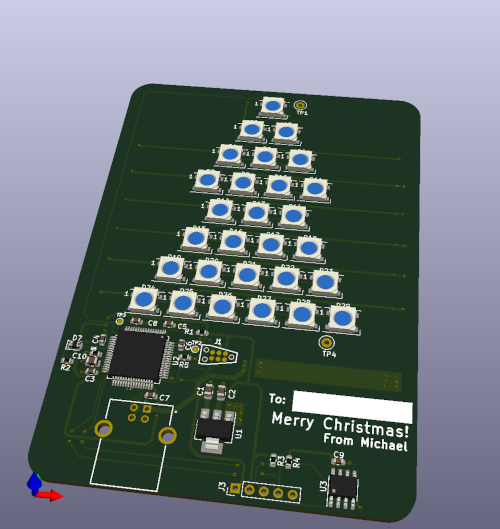

Christmas Card Hardware / Design Notes¶
The hardware consists of:
STM32F401RET6 Microcontroller
28 WS2812B LEDs (Datasheet)
LM75B i2c Temperature Sensor
A USB Connector
The microcontroller was chosen as the cheapest one available on JLCPCB’s SMT assembly service with decent Micropython support. This entire project was desgned in a bit of a rush 😅
The USB connector is a full-sized B connector. This is because it was relatively easy to solder on once I received the PCBs from JLC - I didn’t fancy separately reflowing a connector on - if I had more time, I’d have chosen micro-B or maybe even USB-C
The name label was done with a Brother P-Touch label maker. I had originally intended to Sharpie on names, but it started to smudge a bit. I realised I had some 6mm tape for my label maker that worked nicely.
Some Links
The Schematic is available as a PDF
- The hardware design is available on GitHub
If you want to play with the hardware design, it was designed in KiCad
The board runs Micropython
- In case you need the firmware for some reason:
firmware0.bin (0x08000000)
firmware1.bin (0x08020000)
init_fs.bin (0x8004000)